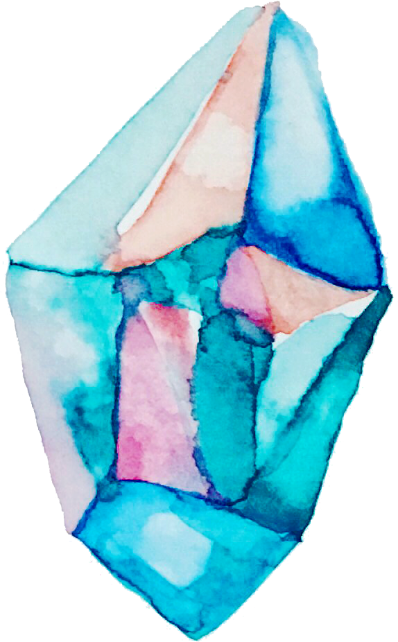
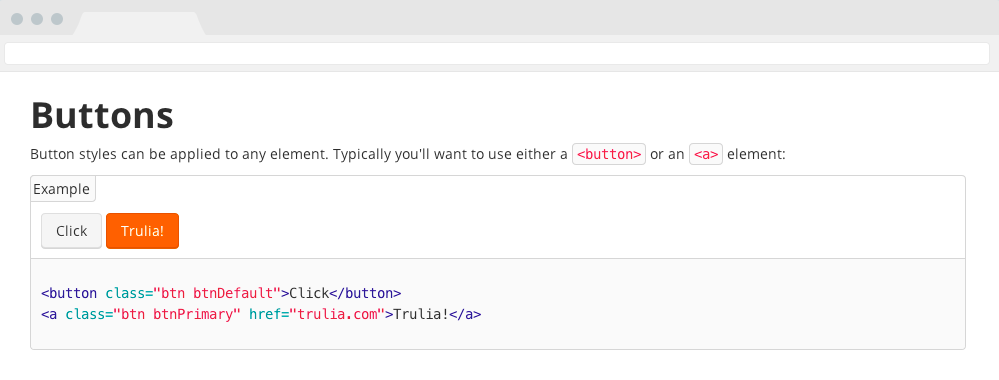

Hologram is a Ruby gem that parses comments in your CSS and turns them into a beautiful styleguide.

Quick start: gem install hologram
And then: hologram init
Why would I use it?
Hologram makes building a styleguide as easy as maintaining your CSS. It is similar to Kneath Style Sheets and Styledocco.
Your documentation is written in your production CSS using a combination of YAML and Markdown. Markdown easily formats your docs and allows you to fall back to raw HTML for tricky parts of the styleguide.

How does it work?
Hologram makes this easy by extending Markdown code blocks that can be marked as examples. The block will then be rendered twice: Once as the actual HTML output and once again as HTML code.
Here is an example documentation block from Trulia's Experience Language which outputs buttons.
/*doc --- title: Buttons name: button category: Base CSS --- Button styles can be applied to any element. Typically you'll want to use either a `<button>` or an `<a>` element: ```html_example <button class="btn btnDefault">Click</button> <a class="btn btnPrimary" href="http://trulia.com">Trulia!</a> ``` */
Where can I get it?
For full usage instructions, review the README.
You can also check out the example project.
Hologram is open source under the MIT License.
Feel free to open any pull requests or issues (-: